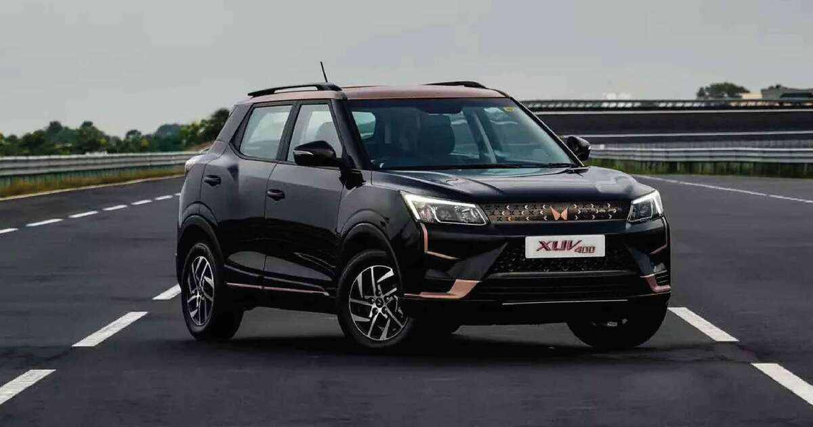
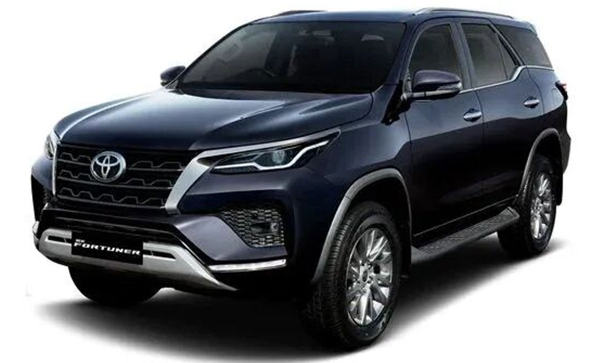
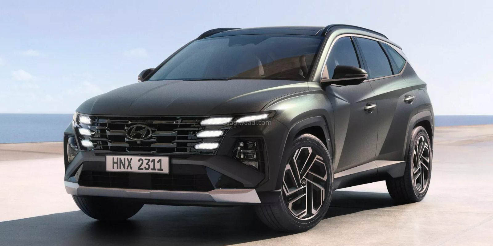

Here is a list of popular cars in India for 2025 and 2026: Top 3 Popular Cars: Hyundai Venue, Mahindra XUV 7XO, Kia Seltos. Popular Car Brands: Tata, Mahindra, and Kia. Upcoming Cars: Maruti Suzuki e Vitara, Toyota Urban Cruiser EV, Tata Punch Facelift. Recent Launches: Tata Sierra, Mahindra XEV 9S, updated Hyundai Venue. For more detailed information, you can explore platforms like CarWale and ZigWheels for the latest updates on car models and prices
Mahindra & Mahindra is a leading Indian automobile manufacturer known for its rugged SUVs, electric vehicles, and commercial vehicles, with a rich history dating back to 1945. Company Background Mahindra & Mahindra, established in 1945, is headquartered in Mumbai, India. Originally founded as a steel trading company, it quickly transitioned into automobile manufacturing, becoming one of the largest SUV manufacturers in India. The company is part of the Mahindra Group and has a significant presence in the agricultural sector through its tractor manufacturing division, which is the largest in the world by volume.
Toyota is a leading global automotive manufacturer known for its innovation, reliability, and commitment to sustainability, producing a wide range of vehicles from compact cars to hybrids and fuel cell vehicles. Company History Toyota Motor Corporation, founded in 1937 by Kiichiro Toyoda, has grown from its origins as a textile manufacturer to become the largest automobile manufacturer in the world. The company produced its first passenger car, the Toyota AA, in 1936, and has since expanded its lineup significantly. Toyota was the first automaker to produce over 10 million vehicles in a year, achieving this milestone in 2012, and by September 2023, it had produced a total of 300 million vehicles.
Hyundai Motor India Limited was formed on 6 May 1996 by the Hyundai Motor Company of South Korea. When Hyundai Motor Company entered the Indian automobile market in 1996 the Hyundai brand was almost unknown throughout India. During the entry of Hyundai in 1996, there were only five major automobile manufacturers in India, i.e. Maruti, Hindustan, Premier, Tata and Mahindra. Daewoo had entered the Indian automobile market with Cielo just three years back while Ford, Opel and Honda had entered less than a year back
